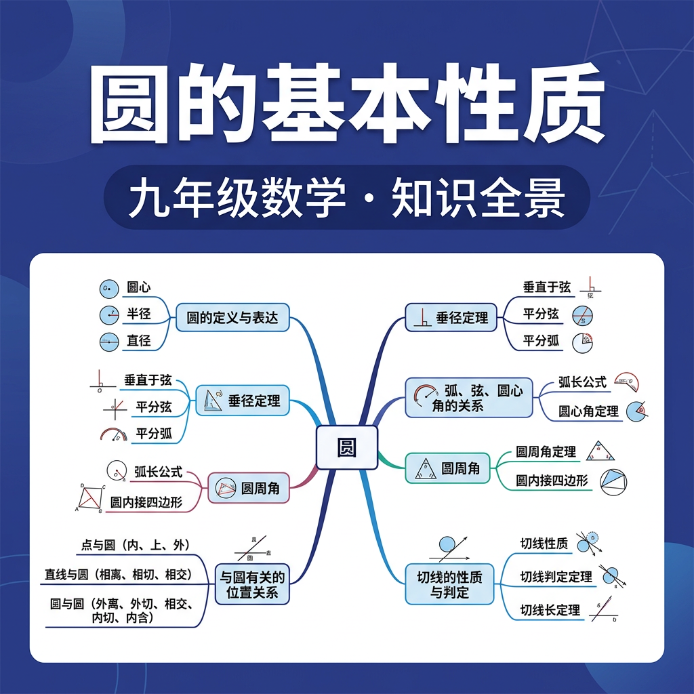

1. 圆的定义是？
2. 直径与弦的关系是？
3. 圆有几条对称轴？
中国古代车轮为什么是圆的？And圆形轮轴到地面的距离（半径）始终不变；But如果是椭圆或多边形，这个距离会一直变化，导致颠簸；Therefore圆的核心特征——"到定点等距"——正是圆形轮子稳定滚动的数学原因！
半径为5的圆，直径为？圆上两点连线最长为？
工人要找一段圆弧（比如破损管道的截面弧）的圆心——And他画了这段弧的一条弦，然后作弦的垂直平分线；But这条垂直平分线一定经过圆心（垂径定理！）；Therefore再画第二条弦的垂直平分线，两线交点就是圆心——这就是垂径定理的实际应用！
圆O半径r=13，弦AB的圆心距为5，弦AB的长度是？
在同一个圆中，两条弦AB和CD相等，则它们的圆心距？
判断：直径是圆的最长弦，且直径将圆分成的两段弧相等。
某工地发现一段古代圆形水井的弧形残墙，弧上确定了三个点A(0,0)、B(8,0)、C(4,6)，请帮工程师找到圆心坐标和半径。
1. 已知圆O的半径r=5，A、B是圆上两点，AB=6，则OA与AB所成角（圆心到AB垂足处，∠ODA，D为垂足）为？
2. 圆O半径为10，弦CD的圆心距为6，弦CD的长度是？
3. 以下哪项不是圆的基本元素？
4. 在圆O中，∠AOB=60°，OA=OB=6，弦AB长度为？
中国古代如何利用圆的垂径定理制作精确的圆形器皿和天文仪器
GPS定位原理——三个已知点确定一个圆（三点确定圆）的数学原理
行星轨道近似圆形，开普勒第一定律与圆的关系
建筑中的圆——从万神殿穹顶到现代体育场的圆的应用